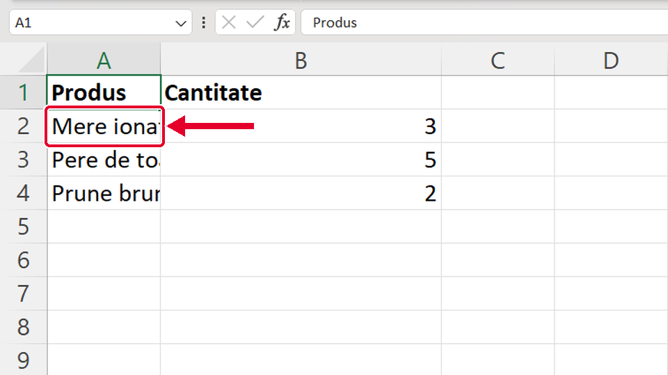
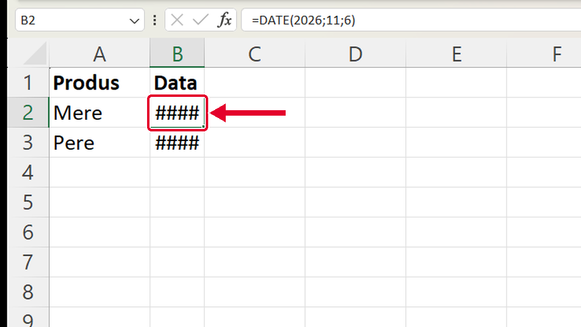
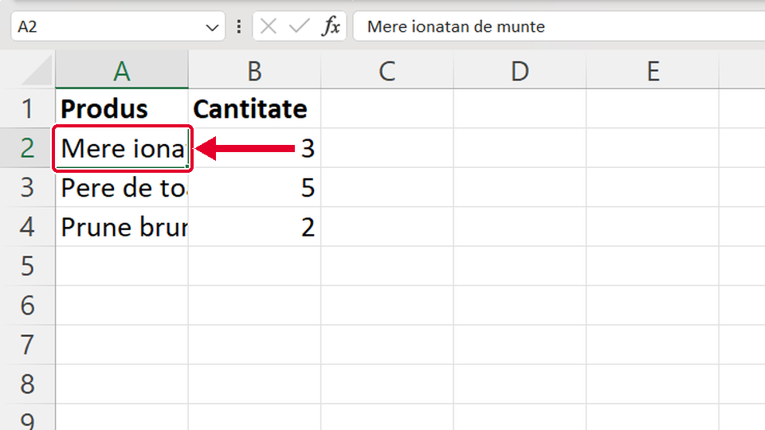

Început
Cum lărgești o coloană
Taste: Spațiu = pauză / continuă · ← și → = pasul anterior / următor. Poți apăsa și pe film.

Legat de asta
Se deschid într-o filă nouă, ca să nu pierzi filmul de aici.
- Mai repedeLățimea potrivită automat ↗
Dai dublu-clic pe aceeași linie, iar Excel potrivește singur lățimea după cel mai lung text.
- ApoiScris îngroșat cu Ctrl+B ↗
Faci capul de tabel ușor de citit: îl scrii îngroșat cu Ctrl+B.
Dacă nu-ți iese
Alege ce vezi pe ecran.
Ai tras de linie, dar s-a lărgit coloana B, iar numele din A sunt tot tăiate.

De ce: Ai prins linia dintre B și C. Linia de lângă o literă mută marginea din DREAPTA coloanei ei: pentru A, e linia dintre A și B.
Ce faci:
- Apeși Ctrl+Z ca să anulezi lărgirea lui B.
- Duci mouse-ul pe linia dintre A și B (lângă litera A) și tragi de acolo spre dreapta.
Taste: Ctrl+Z
În celulă apar doar semne ##### în loc de dată (sau de număr).

De ce: Coloana e prea îngustă pentru ce e în celulă. Excel nu taie o dată sau un număr, ca să nu-l citești greșit, ci arată #####.
Ce faci:
- Duci mouse-ul sus, pe linia din dreapta literei coloanei, până devine săgeată dublă ↔.
- Tragi spre dreapta (sau dai dublu-clic pe linie) până apare data întreagă.
Numele din coloana A apare tăiat („Mere iona…”), deși sus, în bara de formule, e întreg.

De ce: Textul e întreg în celulă, dar coloana e îngustă, iar celula din dreapta (B2) nu e goală, deci textul nu mai are pe unde să treacă.
Ce faci:
- Lărgești coloana A: tragi de linia dintre A și B spre dreapta.
- Sau dai dublu-clic pe aceeași linie: Excel o face exact cât textul cel mai lung.